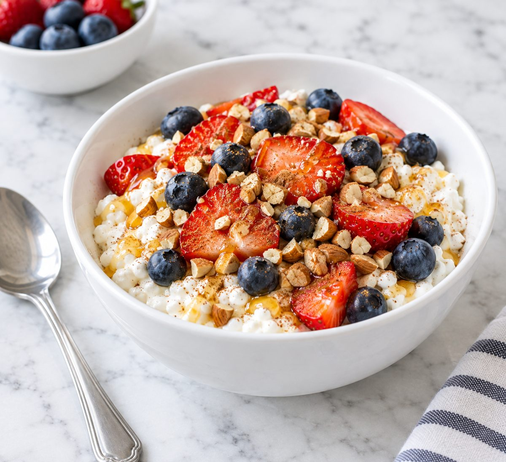
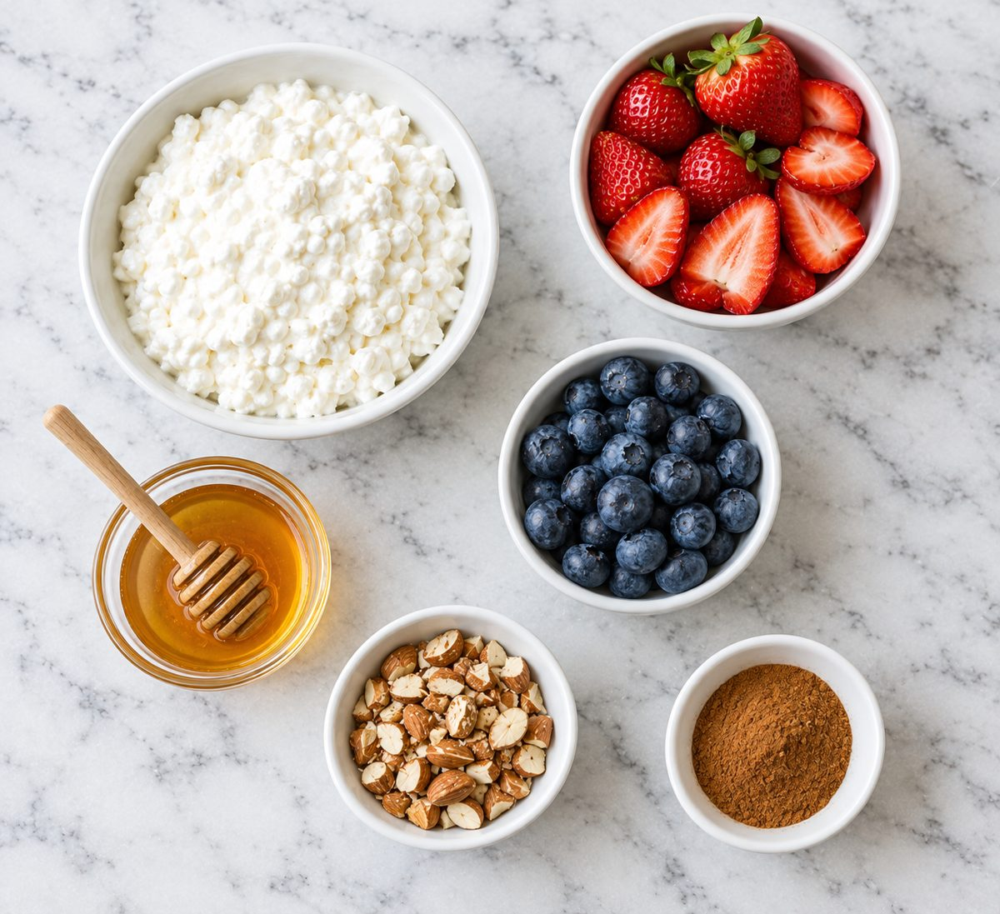
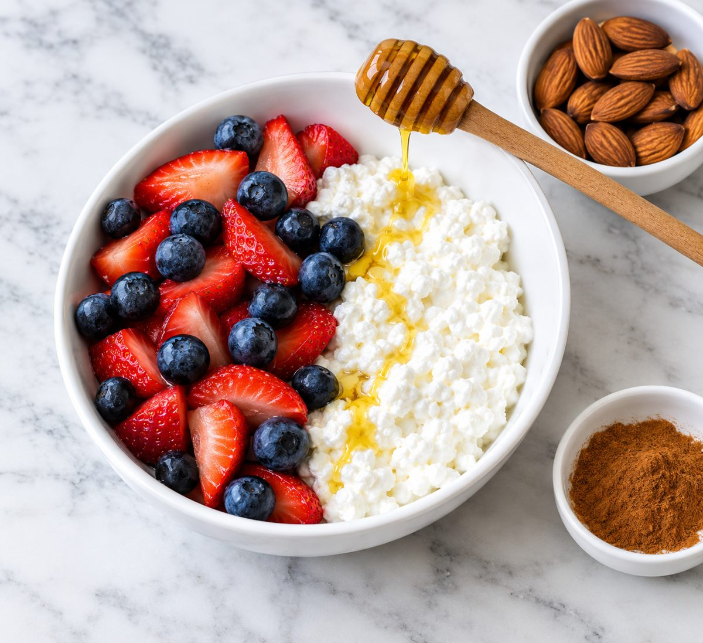
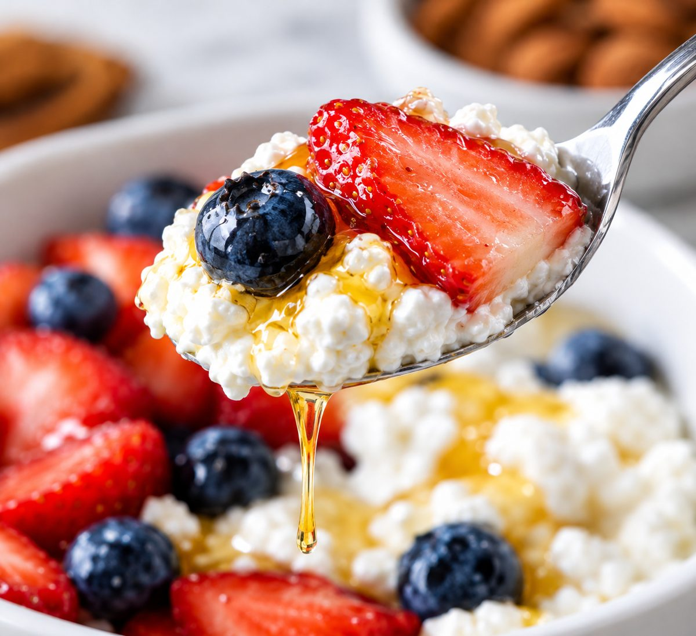
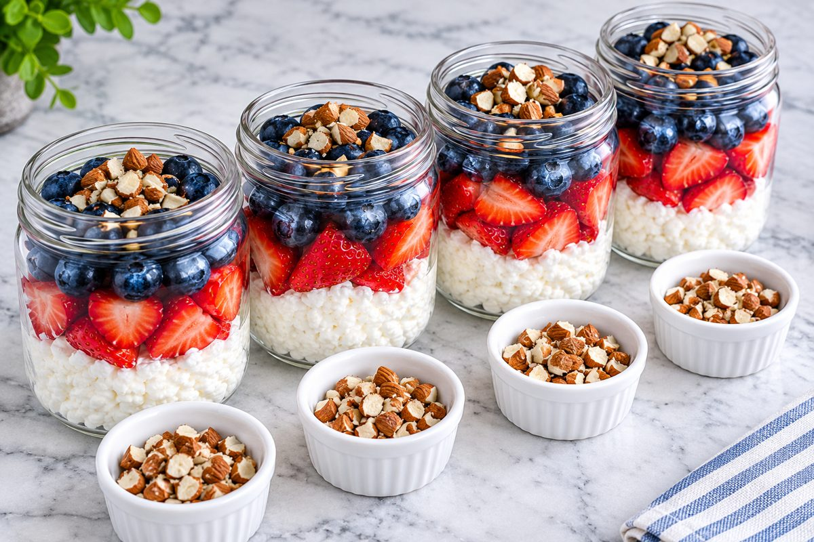

High-Protein Cottage Cheese Bowl with Berries and Honey (5-Minute Breakfast)
Per bowl (about 370g). Nutrition is an estimate and varies with brands.

Cottage cheese is the easy way to a high-protein breakfast. One cup brings about 24g protein, and sweet berries, honey and crunchy almonds turn it into something that feels like dessert.
This bowl comes together in 5 minutes with no cooking at all. It also scales well for meal prep. Layer it into jars on Sunday and breakfast is sorted for the next three days.
If you do not like the lumpy texture, blend the cottage cheese for 20 seconds first. It turns smooth and creamy.
Ingredients

- 1 cup (225g) low-fat cottage cheese
- 1/2 cup (75g) strawberries, hulled and sliced
- 1/4 cup (35g) blueberries
- 1 tbsp (20g) honey
- 2 tbsp (15g) chopped almonds
- 1 pinch ground cinnamon
Instructions
- Spoon the cottage cheese into a bowl.
- Arrange the sliced strawberries and blueberries on top, or on one side of the bowl.

- Drizzle with the honey, then sprinkle over the almonds and cinnamon.

Meal Prep, Storage and Reheating

- Make 4 jars: multiply the recipe by 4. Layer cottage cheese on the bottom, then strawberries, then blueberries.
- Fridge: jars keep for 3 days with a tight lid.
- Almonds: keep them in a small separate container and add just before eating so they stay crunchy.
- Honey: drizzle it on at the last minute, not before storing.
Quick Questions
Which cottage cheese is best? Low-fat (2%) gives a good balance of protein and creaminess. Full-fat tastes richer, and fat-free has slightly more protein.
Can I use other fruit? Yes. Peaches, raspberries, banana or pineapple all work.
Can I swap the honey? Yes. Maple syrup works, or skip it and let the fruit sweeten the bowl.